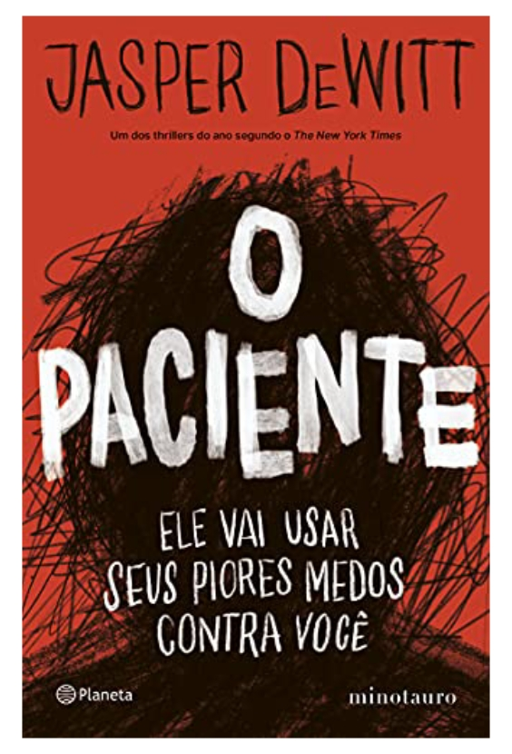

It, a coisa - Stephen King
Sinopse
Um dos melhores thrillers do ano, segundo o The New York Times!
Em uma série de postagens na internet, o jovem – e extremamente autoconfiante – psiquiatra Parker H. conta suas experiências como médico residente em um sombrio manicômio de New England.
Nesse hospital, Parker assume a tarefa de tratar um misterioso paciente. Trata-se do mais antigo caso do lugar: Joe, um homem considerado de grande risco, internado na instituição desde que tinha apenas seis anos de idade. Não há diagnóstico preciso para sua enfermidade, mas o quadro parece piorar dia a dia.
Entre o medo e o desespero, aparentemente convencidas de que Joe poderia representar uma ameaça ao mundo exterior, as autoridades do hospital o mantêm estritamente isolado, confinado e com o mínimo de contato humano possível. Aqueles que já tentaram curar o paciente – ou mesmo se aproximar dele – acabaram se entregando à loucura... ou ao suicídio.
O jovem médico calcula mal os riscos dessa relação, que se mostrará muito mais perigosa do que ele antecipava. Parker pensa ter a solução para o caso, e de fato consegue ir mais longe que qualquer outro profissional antes dele. Mas a que preço?